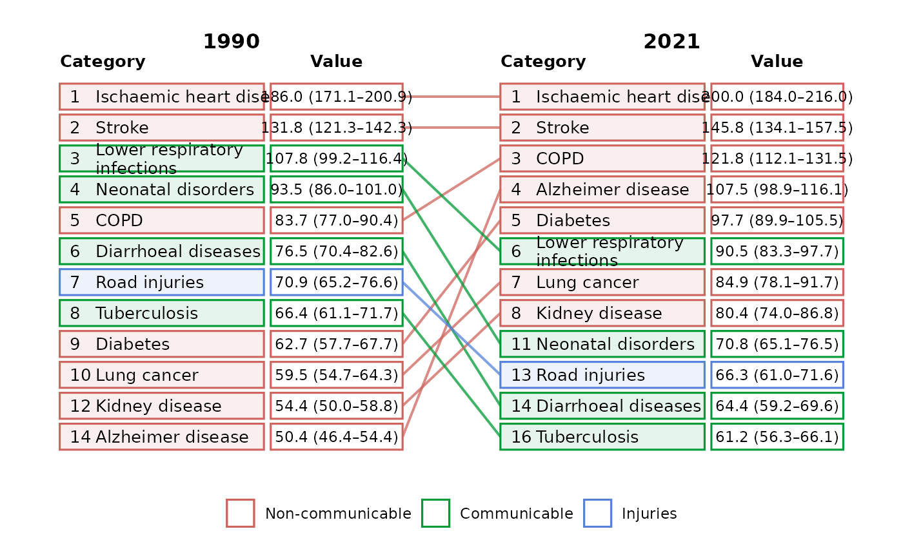

Creates a ggplot2 chart that combines ranked tables with connecting lines.
Categories entering or exiting top_n remain visible outside the boundary.
Usage
ggrank(
data,
category,
period,
value = NULL,
rank = NULL,
label = NULL,
group = NULL,
periods = NULL,
top_n = 10,
direction = c("descending", "ascending"),
ties = c("min", "dense", "first"),
show_transitions = c("boundary", "top_only", "all"),
colour_by = c("auto", "group", "movement", "none"),
palette = NULL,
legend_title = NULL,
legend_labels = NULL,
show_legend = TRUE,
category_header = "Category",
value_header = "Value",
label_wrap = 28,
category_width = 2.4,
value_width = 1.55,
state_gap = 1.15,
base_size = 11,
title = NULL,
subtitle = NULL,
check_rank = TRUE
)Arguments
- data
A data frame with one row per category and period.
- category, period
Unquoted columns identifying the category and ordered state.
- value
Optional unquoted numeric ranking-value column. It may be omitted when an authoritative
rankcolumn is supplied.- rank
Optional unquoted column containing precomputed ranks.
- label
Optional unquoted display-label column. By default
valueis formatted usingformat().- group
Optional unquoted category-group column.
- periods
Optional vector selecting and ordering two to four states.
- top_n
Rank threshold to retain in each state. All categories tied at the boundary are included, so the result may contain more than
top_ncategories.- direction
Whether large (
"descending") or small ("ascending") values rank first.- ties
Ranking method:
"min"(the default competition ranking),"dense", or"first"(unique alphabetical ranks).- show_transitions
"boundary"retains categories appearing in the top N in any selected state;"top_only"includes top-N observations only;"all"includes every category.- colour_by
Colour categories by
"group","movement", or"none". The default"auto"uses groups when supplied and movement otherwise.- palette
Optional named colour vector.
- legend_title
Optional legend title.
- legend_labels
Optional named labels corresponding to every displayed group or movement value.
- show_legend
Show the colour legend.
- category_header, value_header
Headers shown over the two box columns.
- label_wrap
Approximate number of characters per category-label line.
- category_width, value_width
Relative widths of the category and value boxes. Increase
value_widthfor long confidence-interval labels.- state_gap
Horizontal space reserved for connectors between states.
- base_size
Base text size passed to
theme_ggrank().- title, subtitle
Optional plot title and subtitle.
- check_rank
When
TRUE, supplied ranks are checked for disagreements with equal values, shared ranks across different values, and the requested ranking direction. Potential disagreements warn rather than fail because authoritative ranks may use external tie-breakers or additional data.
Details
With colour_by = "auto", supplying group uses group colours; otherwise
movement colours are used. Movement classification prioritises entry to and
exit from the selected top-N boundary, followed by positive (riser),
negative (faller), or zero (stable) rank change. Palette and legend-label
names must match the displayed group or movement values exactly. For charts
with three or four periods, movement colour summarises the net change between
the first and last displayed period; use ggrank_change() to inspect each
adjacent transition.
Examples
ggrank(ggrank_causes, cause, year, rate,
rank = rank, label = display_value, group = cause_group,
periods = c(1990, 2021), top_n = 10
)
